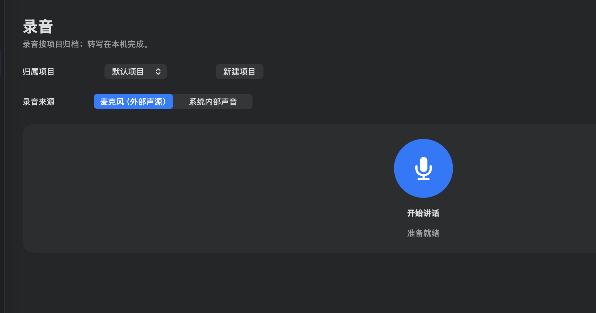

01 / CAPTURE先保留声音，
先保留声音，
再读出线索。
录制麦克风或 Mac 内部声音，在本机完成转写和说话人分段。时间点让文字能够回到原音频。
本机处理分段与时间点

真实 App 界面局部 未包含用户录音
产品核心 / VOICEPRINT MEMORY
第一次听见，给出候选。
你确认或更正。
下一次，判断有了依据。
应用把每段语音与已确认的人物样本比较，同时保留不确定性。只有你确认的合格片段才会成为长期声纹样本；纠错会留下反馈，帮助后续匹配与阈值调整。
产品介绍动画 / HOW IT WORKS
滚动页面，跟随 Voice Memory 的核心流程。画面是产品机制的示意，不是可操作的网页应用。
录制麦克风或 Mac 内部声音，在本机完成转写和说话人分段。时间点让文字能够回到原音频。

应用根据已有声纹提示可能的说话人。候选不会自动变成事实；你可以逐段确认、更正，或新建人物。
合格的确认片段进入加密声纹库。应用记录确认与纠错反馈，并在跨录音、跨日期的留出数据足够时验证阈值；证据不足就沿用现有设置。
进一步理解 / AI SUMMARY
需要时，使用 API 或 ChatGPT 订阅额度生成结构化摘要。摘要可写回对应录音；Agent 提交的摘要草稿，则先在应用内审核、修改，再决定是否反写。
记忆有来处 / CONTEXT
按项目整理录音，搜索人物、标题或转写。Agent 可通过本地 MCP 检索线索，并提交外部音频导入、事件或摘要草稿；关键写入由你在 App 中审核。
音频、转写稿和说明保持对应。
候选与确认状态明确区分。
Agent 请求和草稿进入应用内审核。
你的声音，你的边界
核心录音、转写和声纹分析在 Mac 上完成。已确认声纹以本机密钥加密保存。
声纹候选不是身份事实。外部导入、事件和 Agent 摘要草稿经过应用内审核。
选择 AI 摘要并点击生成后，完整转写及已确认说话人姓名会发送给所选服务；需要网络连接。
VOICE MEMORY FOR MACOS
Voice Memory 仍处于本地开发阶段，暂无公开安装包。适用于 macOS 14 或更新版本的 Apple Silicon Mac。iCloud 同步暂未作为可用功能提供。